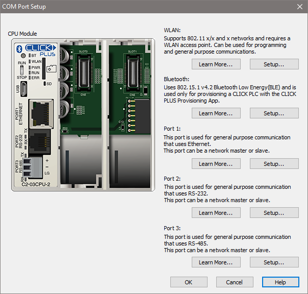

Topic: CL058

| COM Port Setup |
Topic: CL058
|
The COM Port Setup dialog is the entry point for all Port Setup dialogs and Help File information for all built-in communications ports. This dialog uses Learn More and Setup buttons to redirect you to the appropriate Port Setup dialog or Help File.
Open the COM Port Setup dialog from the Setup Menu.

The layout of the dialog will change depending on the currently selected CPU. Options not present in that CPU will be grayed out. For any port that is available on the currently selected CPU, click the Learn More button to open the relevant Help File or click the Setup button to open the port's Setup Details dialog.
|
|
Note: For the non-Ethernet CLICK Basic, Standard, and Analog CPUs, Port 1 is an RS-232 port used for programming and maintenance only. For the Ethernet CLICK CPUs and CLICK PLUS CPUs, Port 1 is an Ethernet port used for general-purpose communications. For C2-DCM Setup see CL289 - C2-DCM Com Port Setup Details. |
|